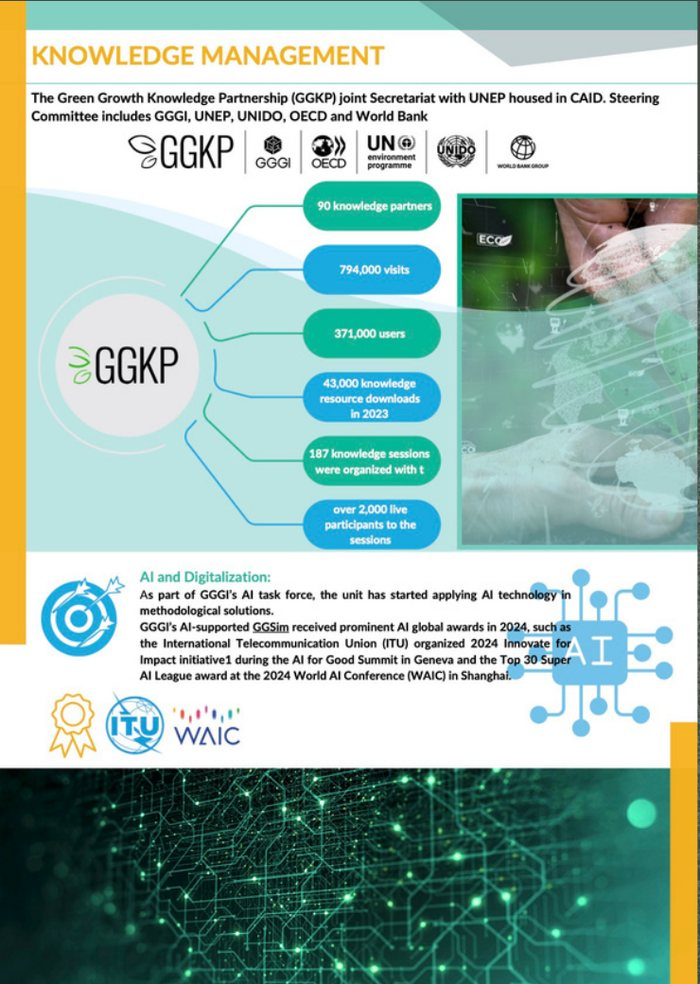
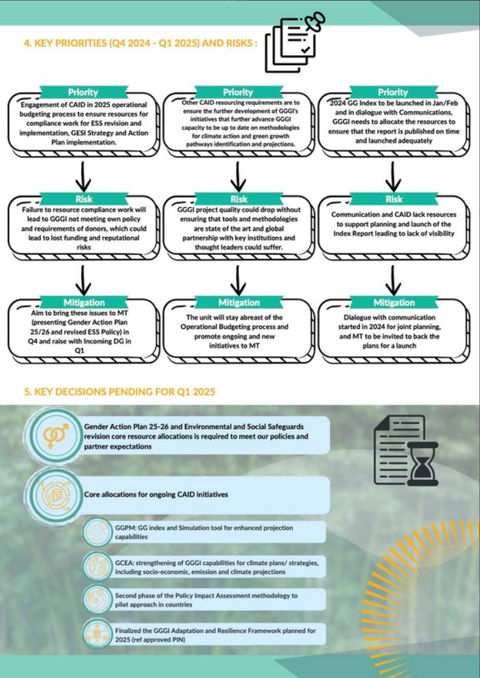
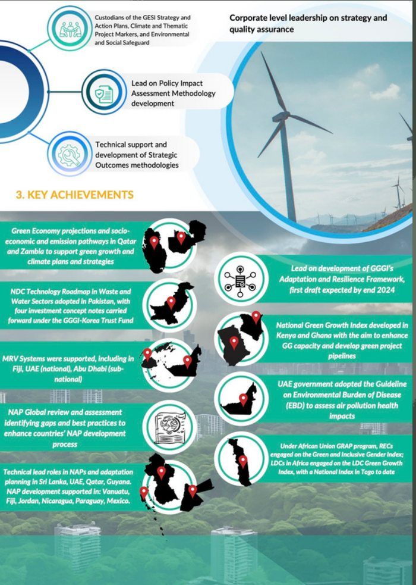

CASE FILE — 03.1
CAID Policy Brochure
GGGI, Seoul- Context
- GGGI's Climate Action and Inclusive Development unit needed its internal analytical reporting turned into a publication its partners and donors could actually read.
- Role
- Sole designer and editor for the brochure, working directly from the source report.
- What I did
- Identified the material worth keeping, restructured it into a clear narrative, and designed the full visual layout — knowledge-management data, key priorities and risks, and headline achievements — while holding institutional branding constant throughout.
- Outcome
- A finished multi-page publication used for partner and donor knowledge-sharing.


